お魚が好きだよ！ [梅吉]
おとーさんとおかーさんのお夕食のおすそ分けをもらえることになった梅吉さん。
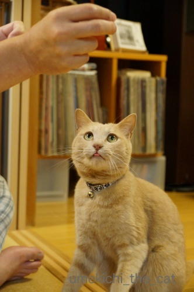
お魚はニジマスですよー。
食べますか？
ちら舌で真剣に見つめてます。
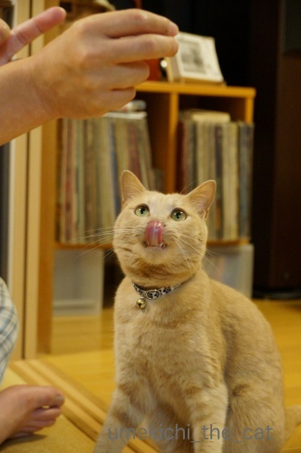
美味しそうなニオイにペロリン！
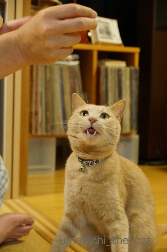
![[猫]](https://blog.ss-blog.jp/_images_e/101.gif) はようっ！くださいなー！！
はようっ！くださいなー！！
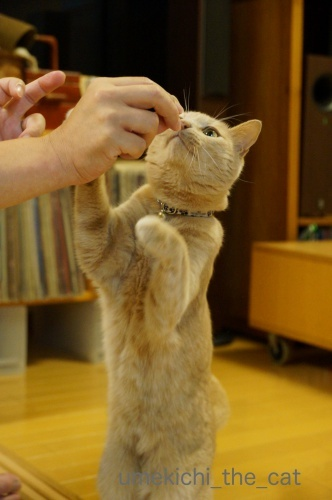
美味しそうなものの時は立ち上がっちゃいます。
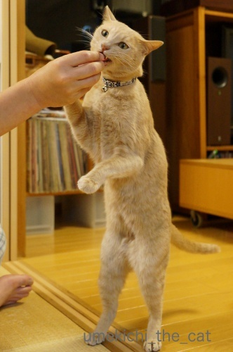
長いですねー＾＾
そしてなぜか顔がワルっぽいw
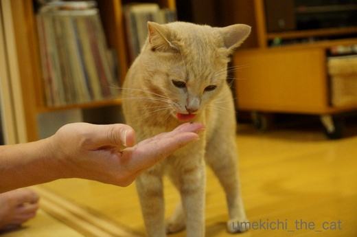
無くなってもしつこく手を舐めていましたよ＾＾
鮎は秋口まで手に入りますがニジマスは短い期間店頭に並ぶのみ。
（理由はよくわかりませんが・・・）
見かけると積極的に買っちゃいます。
海のお魚とは違う淡白な味わいが家族も梅吉もお気に入りです。
 ↑ガブッと一押し↑
↑ガブッと一押し↑
前記事に続いてのお花写真。
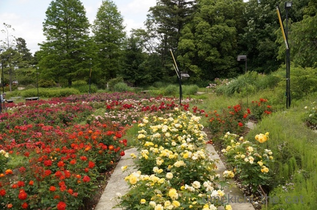
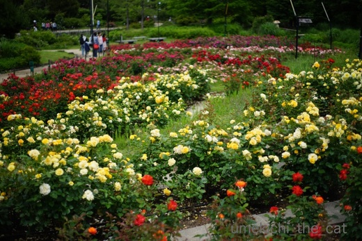
構図は違いますが同じ風景を写した写真。
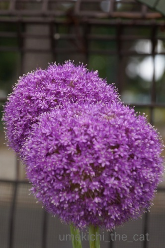
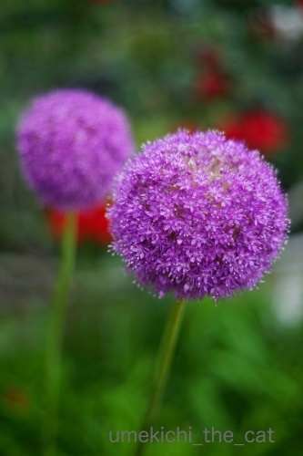
こちらも同じ花を写した写真。
どちらも1枚目は私、2枚目はおっとの撮影。
全然雰囲気が違いますよねー。
もちろん使っているレンズのタイプも違うものですけど。
同じ被写体でも撮影者とレンズによってこんなにも違う、というお話でした(^▽^;)
なお、私のカメラ持ち歩きは涼しい季節がやってくるまで無いかな。
週末もお花を見に行ったのですが暑くてそんな気力はありませんでしたw
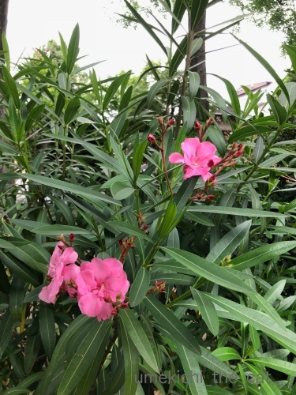
（iPhone撮影）
こちらはさっき撮ってきたばかりの夾竹桃。
これが咲くと夏！って感じがします。
それにしても今年は開花が早いような・・・
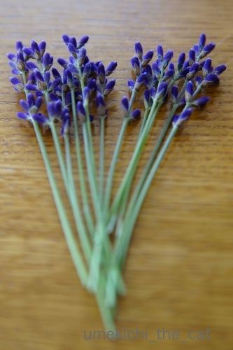
これはベランダで鉢植えにしているラベンダー。
イングリッシュラベンダーなので大阪の高温多湿が合わないのか花つきが悪い・・・
これで全収穫量とちょっと寂しいのですが香りはピカイチです![[ぴかぴか（新しい）]](https://blog.ss-blog.jp/_images_e/150.gif)
ドライフラワーにして（梅吉にいたずらされないように）トイレに飾ります＾＾
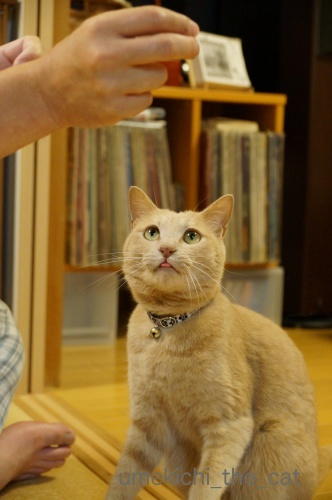
お魚はニジマスですよー。
食べますか？
ちら舌で真剣に見つめてます。
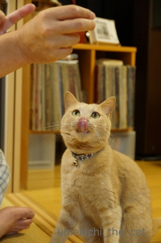
美味しそうなニオイにペロリン！
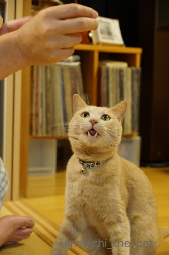
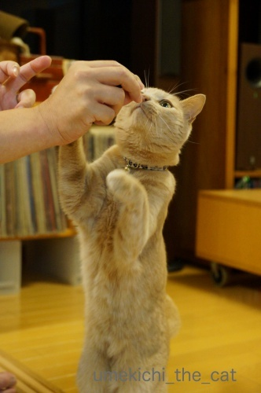
美味しそうなものの時は立ち上がっちゃいます。
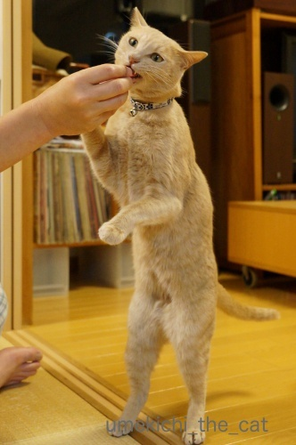
長いですねー＾＾
そしてなぜか顔がワルっぽいw
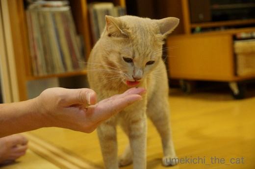
無くなってもしつこく手を舐めていましたよ＾＾
鮎は秋口まで手に入りますがニジマスは短い期間店頭に並ぶのみ。
（理由はよくわかりませんが・・・）
見かけると積極的に買っちゃいます。
海のお魚とは違う淡白な味わいが家族も梅吉もお気に入りです。
前記事に続いてのお花写真。
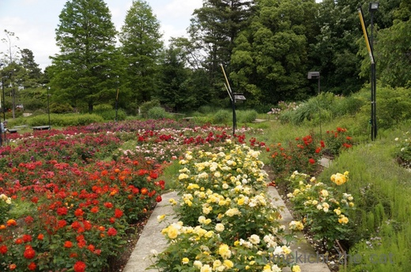
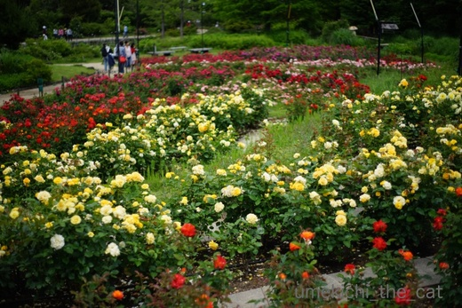
構図は違いますが同じ風景を写した写真。
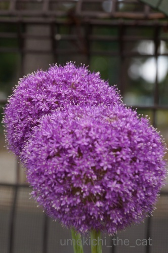
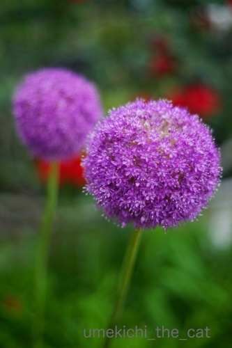
こちらも同じ花を写した写真。
どちらも1枚目は私、2枚目はおっとの撮影。
全然雰囲気が違いますよねー。
もちろん使っているレンズのタイプも違うものですけど。
同じ被写体でも撮影者とレンズによってこんなにも違う、というお話でした(^▽^;)
なお、私のカメラ持ち歩きは涼しい季節がやってくるまで無いかな。
週末もお花を見に行ったのですが暑くてそんな気力はありませんでしたw
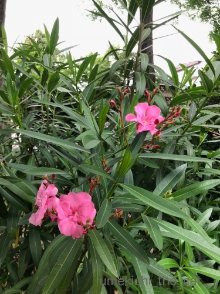
（iPhone撮影）
こちらはさっき撮ってきたばかりの夾竹桃。
これが咲くと夏！って感じがします。
それにしても今年は開花が早いような・・・
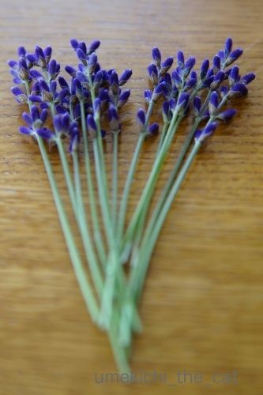
これはベランダで鉢植えにしているラベンダー。
イングリッシュラベンダーなので大阪の高温多湿が合わないのか花つきが悪い・・・
これで全収穫量とちょっと寂しいのですが香りはピカイチです
ドライフラワーにして（梅吉にいたずらされないように）トイレに飾ります＾＾
2018-05-28 13:43
nice!(57)
コメント(24)

カフェオレ色の梅吉

梅吉 2023年8月10日 永眠


梅吉と出会った譲渡会

犬猫の理由なき殺処分ゼロ
妄想広告
UMEKICHI 光

爆発的に早い！
時々攻撃的！
Thanks to Mr.Boss365
爆発的に早い！
時々攻撃的！
Thanks to Mr.Boss365

上目遣い♪ ペロリ♪ チラキバ♪
そして伸び～(#^.^#)
何もかも可愛い！！！！(*´ω｀*)
そして短いアンヨとおててを見慣れているので
梅吉さんがものすごく長く感じます（笑
by きぃ (2018-05-28 15:19)
梅吉さん、みにょ～んと立ち上がった後ろ足がステキ(^O^)
美味しい物は家族皆で楽しまなきゃねぇ(^-^)
いつまでも手を舐めるってきっとスゴク美味しかったんだろうなぁ(^_^)v
by ニッキー (2018-05-28 16:08)
梅吉さんは、本当に表情豊かですね～(^-^)
チロッと舌、フル舌、フル牙。そして、たーっち！！
これは缶詰じゃなく、ホンモノですな、とご満悦のお顔。
んーーー、美味しそう。
梅吉さん、オバちゃんにも一口くださいな♪
写真は、その人のクセやこだわりが見えたりして、
面白い反面、難しいですよね。
最後のラベンダーの構図・撮り方、とても好きです(^.^)
by morichan (2018-05-28 16:38)
ニャンコって欲しくてたまらないと匂いをぺろりんしますね。梅吉さんの一生懸命な様子がよくわかりま~す。
by zombiekong (2018-05-28 17:17)
ついに二足歩行を始めて、猫類が人類に近付いた歴史的瞬間の御写真みたい(^_^;)
いや、エジプトの古代壁画に描かれた猫に似てるから、神に近付いたのかも(^_^;)
にしても、梅吉様は何頭身なんでしょうか、凄くスタイルがいい気がしますが(^^)
お花の御写真、いくら拝見しても、小生は「違いがわかる男」ではないですね^_^;
by middrinn (2018-05-28 17:18)
梅吉さんのチラ見えから鼻舐めずりまでの舌の動きがかわいい(*^▽^*)
ウチのも名残惜しそうに舐めて、いったん立ち去ってまた戻ってきて舐めますよ～。もう無い事を確認しているのかもしれません^^;
写真は同じ場所やモノでも撮り方で別物になって楽しいですよね♪
我が家でも後で撮ってきた写真を整理していて、相方の分を見て「コレ何を撮ったんやろう？？」と思うことありありです(≧▽≦)
大阪は亜熱帯、一昨年ルピナスやレウイシアを速攻でダメにしたので、もう高温多湿に弱い花は買いません・・・。
by ゆきち (2018-05-28 17:28)
こんにちは。
梅吉君！！上手だ！！そのまま二足歩行マスター！！（⌒ー⌒）
タイトル・主演は決まりました！！
「猫の惑星: 創世記」主演 ちぃ梅吉（所属：梅しごとー梅吉日記）
by Boss365 (2018-05-28 18:31)
梅吉君は仁王立で格好良いじゃないですか。(^_^)/””””
by 旅爺さん (2018-05-28 18:34)
なんとニジマス！！
これは家では食べないです。ってか魚屋さんでも見ない(@@
梅吉君、貴重な物をお裾分けしてもらえてよかったね^^
たちあがって食べてる姿、ますむらひろしの漫画に出てきそうだよ(笑)
わたしに二本足で頑張るからニジマスくださいｗ（ってかもともと二本足だし！）
by リュカ (2018-05-28 18:48)
ちら舌、ペロリン、「にゃあーっ」、立っち♪
可愛いですにゃあ＾＾
ニジマス、売ってるの見た覚えがない‥買ったことないかも。
奥多摩で釣った時に食べたような気がします＾＾
梅吉さん、ツウですね＾＾
写真、個性が出ますね～どっちも綺麗＾＾
by sana (2018-05-28 20:27)
ニジマスのホイル焼きが好きです。
野菜と一緒にホイルに包んで焼きます。
レモンをかけて食べます。
ニジマス釣りに行くと、いつもそうして食べていました。
でも、長い事行っていません(^^;
by riverwalk (2018-05-28 20:42)
梅吉さん、美味しい物には目が無い感じですね！
ついつい舌が出てしまいますね(^^)
by ma2ma2 (2018-05-28 22:08)
梅吉さん、待ちきれないご様子＾＾
舌ペロンが可愛いです♡(≧▽≦)
ベランダで栽培したラベンダー、とても良い香りが
ここまで漂ってきそうです( ´艸｀)
by マーヤ (2018-05-28 22:18)
梅吉さん、凄い集中してますね（笑）
ペロリンの前にちら舌、ちっちゃな舌が可愛いです。
当たり前ですが、撮る人によって個性が出ると思います。
我が家の場合、私は直接的で、夫はロマンチストな気がします。
撮っていると、横からうるさいっす。
by kiki (2018-05-28 22:27)
おっ！ニジマス！
わたしにも分けてください・・・（*´∀｀*）
川魚っておいしいですよね。ニジマス、イワナ、ヤマメ、アユ・・・
観光地で焼いたの売ってるとものすごーく欲しくなります。
塩を落としてお酒に入れてもまたサイコーです♡
梅さま、ペロリンのお顔がキュートです。
そして、スレンダーですよね？（プライモーディアルポーチがない！？）
by Ja-Kou66 (2018-05-29 00:49)
昔は年中一匹100円ぐらいで店頭に並んでたような？
最近はほとんど見なくなりましたね。
うちの子達もニジマス大好きです＾＾
by ぽちの輔 (2018-05-29 06:48)
おはようございます。
梅吉さんの立ち姿、そのまま歩いてしまいそうな勢いですね!
魚の力は凄いです(^^)
by kou (2018-05-29 07:22)
見事な立ち姿！
このまま、二足歩行でマラソンも行けそう！
by よーちゃん (2018-05-29 08:57)
ニジマス、子供の頃大好きすぎて
ものすごく頻繁に買ってもらっていました。
最近はあまり見かけなくなった淋しいです。
唐揚げ粉付けてフライパンでムニエルも美味しいんですよねー。
by ryang (2018-05-29 21:24)
お魚に夢中ですね。^^)
ウチのヤツもお魚好きで、焼きサバが特に好きです。
あと、食感は違いますがブシカツオも。^^;
ニジマス、店頭に並んでいるところ見たことがほとんどありません。。。
by yes_hama (2018-05-29 21:42)
ペロペロしてくれる可愛い息子と野に咲くお花。。。何と幸福な日々！
by Ginger (2018-05-30 13:24)
きぃさん＞
実際に長いのですよー。
梅吉の伸縮性はすごいな、と感心するばかりですw
見慣れている私ですら「長いねー！」と言っちゃいますから(*>艸<)
ニッキーさん＞
みにょ〜んと脚線美を披露してみました（笑）
フード以外はあげないようにしたいのですが
美味しいものはみんな一緒にの気持ちでついつい・・・
そのかわり少しだけ、は徹底するようにしていまーす。
無言でぐいぐいおっとに接近していたので
ニジマスは相当お気に召したようですよ＾＾
morichanさん＞
美味しい時は無言になるんですが
この時もひたすら無言でぐいぐいおっとに（手はおっと）
迫ってました(*>艸<)
とっても美味しかったようですよー。
最後のラベンダーの写真、おっとの撮影です。
褒めていただいて小鼻を膨らませて喜んでいましたよ＾＾
ありがとうございますm(_ _)m
zombiekongさん＞
はい＾＾一生懸命ペロリンしておりましたーＯ(≧▽≦)Ｏ
お魚大好きなんですよ！
川魚、ししゃもなど割と淡白なのがお好みのようです＾＾
middrinnさん＞
「創世記」とのお言葉をBoss365さんからいただきましたよ＾＾
やがて人類は梅吉をリーダーとした二足歩行の猫に支配される・・・
楽しみな世の中ですね ( ´艸｀)本当の下僕になれるんだわー！
梅吉は！顔（頭）が小さくて手足がながーくて本当にスタイルが良いんです。
羨ましいです！！
大谷くんには負けますが８頭身は間違いないです。
ゆきちさん＞
こてつくんは空になったご飯の器の前で
悲しい顔しちゃうんですよねー ( ´艸｀)
梅吉も戻ってきて空の器を「なめたら わいてでてくるんちゃうか」と
シツコク舐め続けていますよ(^▽^;)
ラベンダーは札幌から連れてきた子で一度死にかけて
復活してきました＾＾
ダメになっちゃったもの、生きているけど花をつけなくなったもの。
まだまだ植物たちのご機嫌が読めませんw
Boss365さん＞
ジェネシス！ですね！！
二足歩行の猫たちはどんな風に人間を支配するのでしょうか！？
優秀な下僕と自負している私ですが
高級官僚として取り立てられるかしらー。
やっぱりお世話がかりのままかな・・・
旅爺さん＞
下半身に安定感がありますから！＾＾
ポーズを決め日も近いかもしれません( ´艸｀)
by ちぃ (2018-05-30 16:14)
リュカさん＞
大手じゃないうちの近所のスーパー、ニッチなところを突いてきますよw
ホイル焼きや唐揚げ粉をつけてムニエルも美味しいよって
コメントで教えてもらったのでいつもは塩焼きなんだけど次はそうするー！
良いでしょー＾＾
リュカさんには二本足＆かわいいポーズを期待しているわ♡
ちなみに梅吉は鮎とハモも好きなんですよ＾＾
sanaさん＞
ニジマス、外で食べるイメージですよね＾＾
観光地に行くと串を打って塩焼きで売っている、みたいなw
梅吉は結構ツウかもしれません！
これからの季節は鮎、ハモも好きなんですよー。
もしかしたらお酒もいけるかも！？
写真、お誉めいただいてありがとうございます(〃▽〃)
riverwalkさん＞
ホイル焼き＿φ(￣ー￣ )今度やって見ますねー。
ニジマスにレモンはマストですね＾＾
私は酸っぱいの好きなので結構たっぷりかけちゃいますw
ニジマス釣り・・・最近は「森の人」ですものね！！
ma2ma2さん＞
食べたことなくても美味しいものはわかるようで(-_-メ)
私たちが食事をしている間中ウロウロされて
落ち着かない時がありますよー(꒦ິ⌑꒦ີ)
マーヤさん＞
私たちの食事が終わると
「きょうはなにかもらえるんかー？」と
わーわー鳴いて大変です・・・って癖をつけた私が悪いんですがw
おすそ分けは月に２〜３どあるかないかで
普段は水分摂取も兼ねてにゃんこ牛乳を飲ませています＾＾
kikiさん＞
食べ物には常に真剣に向かい合う梅吉ですからー(≧▽≦)
舌は写真を撮っているときは気づかなかったのですが（連写なので）
PCで見てうまいこと写っていて「やったね！」でした＾＾
あれこれアドバイスを繰り出すご主人の横で
苦笑いしながら写真を撮るkikiさんの様子を想像して
わらっちゃいました( ´艸｀)
by ちぃ (2018-05-30 18:05)
Ja-Kou66さん＞
川魚フリークがここにも！ヾ(*ΦωΦ)ﾉ
どうも日本酒をお好みの方が反応しているような・・・
塩を落としてお酒に！
それは初めて聞きましたー。調べてみると「骨酒」という食し方のようで・・・
ツウな食べ方、一度やってみたいです！！
梅吉のプライモーディアルポーチは控えめなんですよ。
私の二の腕のそれの方が立派なのはどういうことでしょうwww
ぽちの輔さん＞
一尾100円とは庶民の味方ですねー＾＾
私が買ったのは一尾298円の50円引きでした！
ぽちの輔さんほどお買い物上手ではありません(〃▽〃)
kouさん＞
梅吉はお肉とお魚、どちらかというとお魚派のようですよ。
正しい日本の猫でしょうか＾＾
なかなか背筋の伸びた立ち姿ですよねー。
こんど歩かせてみようかしら(*>艸<)
よーちゃん＞
瞬発力（爆発力も。笑）はすごいけど
持久力には問題ありでーすw
なにより飽きっぽいので途中で走るのやめそうですwww
ryangさん＞
「うちの子魚を食べなくって・・・」というお母様の心配は
皆無だったようですね＾＾
唐揚げ粉でムニエル、なるほどー！
小麦粉も下味も一度についちゃう優れ技ですね。
今度やってみます(^_－)☆
yes_hamaさん＞
アズ氏は青魚派なんですね＾＾
ひょっとしてお名前の由来はそこから？とか( ´艸｀)
（アズ＝azul ？）
ニジマスは釣り行くor淡水湖のある観光地で食べるものだと思っていたので
「大阪の街中で！」と嬉しい驚きでした＾＾
Gingerさん＞
お夕食後の団らんの一コマでした＾＾
梅吉の（毛づくろい以外の）ぺろぺろは舌の先でするので
ザラザアしていなくて気持ち良いんですよー。
by ちぃ (2018-05-30 21:33)